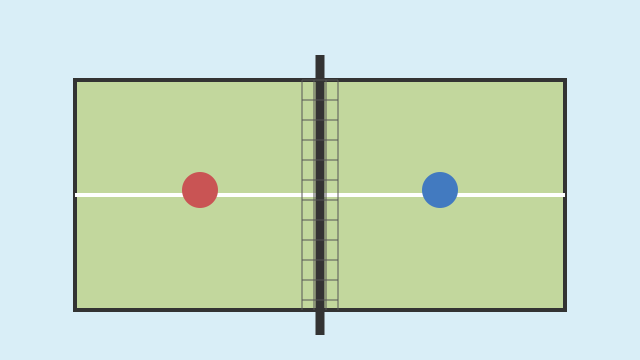

Galería de ecuavóley
Estas imágenes son ilustraciones originales creadas para explicar elementos del deporte; no son fotografías de partidos reales.


Recurso multimedia: sonido de silbato
Escucha una simulación sonora de un silbato deportivo creada para este proyecto.
Si no se reproduce, abre el archivo de audio.